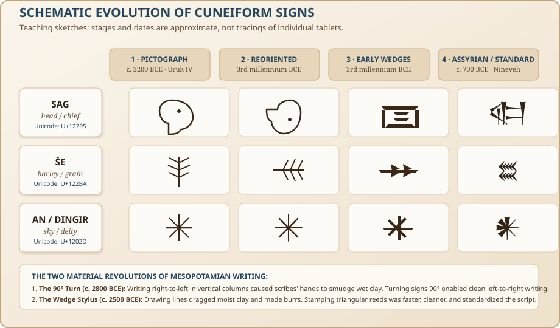
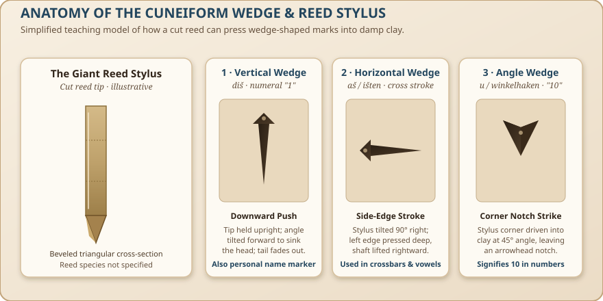
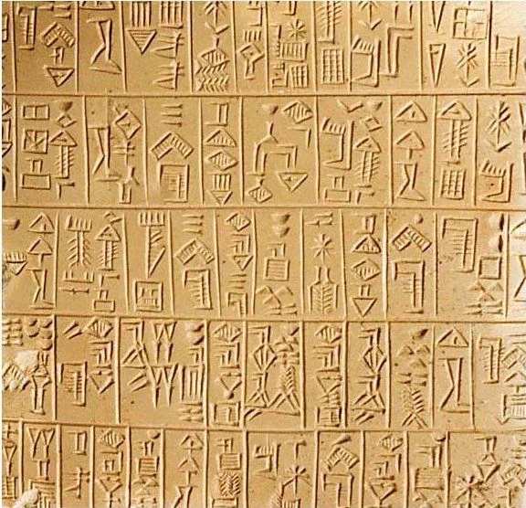
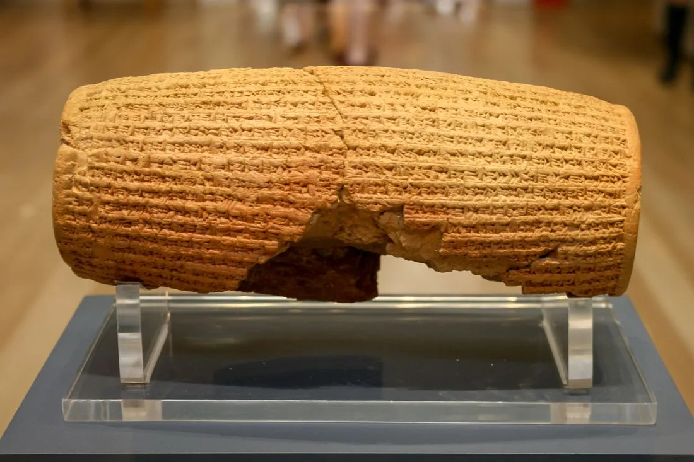
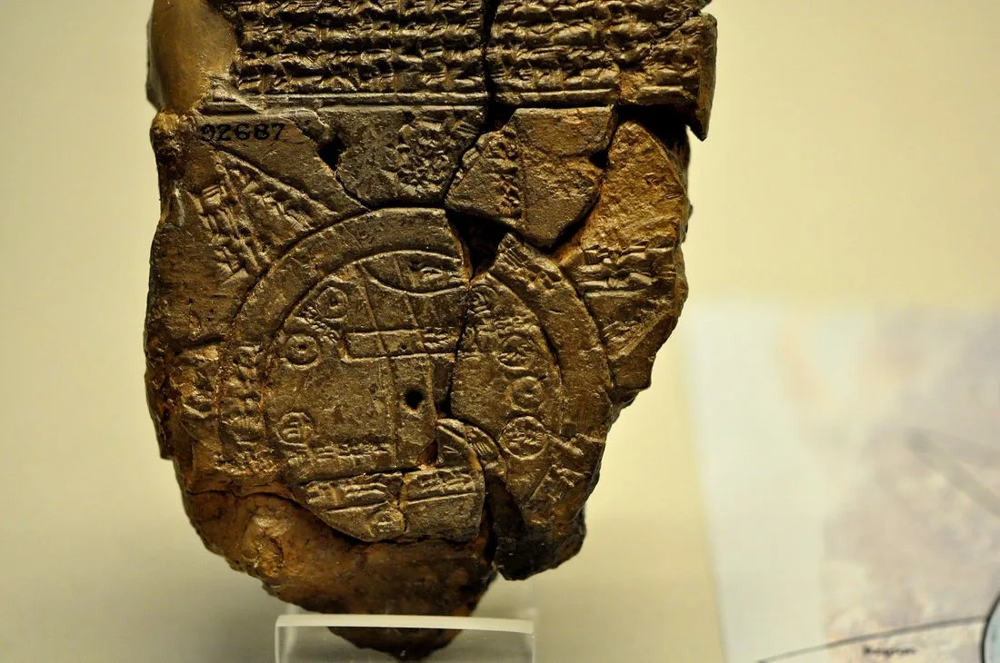

Language & Literature · Ancient Epigraphy · Grades 6–12
Learning
Cuneiform
A Sumerian Scribe’s Workshop: From Clay Tokens to Royal Chronicles
Over 5,000 years ago in southern Mesopotamia, administrators began recording goods with signs drawn in clay. Over centuries, scribes developed the pressed wedge forms now called cuneiform. Step into the ancient Edubba (the Tablet House) to explore one of the earliest writing traditions.
45–60 minutes
Evolution → Stylus Physics → Script Logic → Scribe Tablet → Base-60 Math → Archaeology → Evidence Check
Clay. Reed. Wedge.
Standardized Sumerian signs: an-ki (heaven & earth), lugal (king), e₂ (house), and dub-sar (scribe) rendered in local Noto Cuneiform.Your reading mission
- Distinguish writing system from language: Understand how cuneiform script was adapted across three millennia for completely unrelated languages (Sumerian, Akkadian, Hittite, and Elamite).
- Understand the material driver: Explain why pressing a triangular reed wedge replaced dragging a pointed stylus across damp clay.
- Master the tripartite sign engine: Differentiate between logograms (word signs), syllabograms (sound signs), and determinatives (semantic category markers).
- Calculate in sexagesimal: Count and write numbers using the ancient Mesopotamian base-60 place-value system.
- Evaluate primary physical evidence: Compare photographs of objects from Adab, Babylon, and Sippar with cataloged descriptions.
1 · The Evolution of Writing (3500 BCE – 600 BCE)
Writing did not appear all at once. People in the ancient Near East used clay tokens to count goods for millennia before the first tablets. Some tokens were enclosed in sealed clay envelopes called bullae. How directly tokens led to writing is debated.
By about 3300 BCE, administrators at Uruk recorded quantities and goods on clay tablets with numerals and drawn signs. Scholars call this early stage proto-cuneiform. Later scribes increasingly made signs by pressing a stylus into clay.

The Two Material Revolutions
1. The 90° Turn (c. 2800 BCE)
Early tablets could arrange signs in columns and cases. Over time, writing direction and sign orientation changed; later cuneiform was generally written in lines from left to right. The exact reasons for these changes are still studied.
2. The Wedge Stylus (c. 2500 BCE)
A pointed stylus could draw signs in clay; a cut reed or wooden tip could instead impress wedge-shaped marks. These marks became characteristic of later cuneiform. Its modern name comes from Latin cuneus, meaning “wedge.”
2 · The Stylus Lab: Physics of the Reed Wedge
Every one of the hundreds of cuneiform signs is composed of just three fundamental stroke impressions (and one occasional diagonal variation). Scribes did not draw; they pressed. Explore the interactive stylus lab below to test how holding a triangular reed at different angles creates each mark.
Vertical Wedge (Diš)
Sumerian: diš 1 (one) · Divider
Technique: Hold the triangular reed stylus upright. Tilt the tip slightly forward and press downward into damp clay. The triangular head sinks deepest while the tail tapers off smoothly.
Scribe Note: Scribes placed this single vertical mark before a man’s name in administrative records as an identity marker (like a bullet point).

3 · Deciphering the Tripartite Code
One of the most common misconceptions is that cuneiform is a single language. In reality, cuneiform is a writing system that was adapted to write completely different, unrelated languages across 3,000 years:
- Sumerian: An agglutinative language isolate with no known living or dead relatives.
- Akkadian (Assyrian & Babylonian): An East Semitic language related to Hebrew, Aramaic, and Arabic.
- Hittite: An Indo-European language related to Greek, Latin, and English.
- Hurrian, Elamite, & Ugaritic: Distinct regional Near Eastern tongues.
The Three Jobs of a Cuneiform Sign
1. Logograms (Word Signs)
A sign represents an entire word or concept. For example, 𒈗 represents the Sumerian word lugal ("king"). When an Akkadian scribe saw 𒈗, they read it in their own language as šarrum ("king")—just as the Arabic numeral "4" is read "four" in English, "quatre" in French, and "cuatro" in Spanish.
2. Syllabograms (Sound Signs)
Signs can represent spoken syllables (e.g. ba, bi, bu, ab, ib, ub, ša, ki). Scribes used the Rebus Principle: if a word sign has a known pronunciation, its sign can be used to spell out the sound in any other word or grammatical ending.
3. Determinatives (Classifiers)
Silent semantic markers that were written but not spoken aloud. They told the reader what category of noun followed. For example, 𒀭 (dingir) before a name indicated a deity; 𒆠 (ki) after a word indicated a city or land; 𒇽 (lu₂) indicated a male profession.
Polyphony: One Sign, Several Jobs
Select a context below to inspect how the single sign AN (𒀭) changes its function based on grammatical context:
an · sky / heaven: a direct Sumerian logogram (word sign) referring to the physical firmament or sky realm.
Why do Assyriologists use subscript numbers like e₂, u₄, and šum₂?
In Sumerian, many distinct words were pronounced similarly (homophones), just as English has "to", "two", and "too". Ancient scribes used different cuneiform signs for each homophone. To distinguish which sign was written without confusing modern readers, 19th-century scholars numbered them:
- e₁ (or plain e): The first sign read e (e.g., ditch/levee).
- e₂ (or é): The second sign read e (specifically 𒂍, "house/temple").
- e₃ (or è): The third sign read e (to go out / emerge).
The numbers are modern scholarly indexing tools, not ancient sounds!
4 · The Scribe's Apprentice Workshop
Welcome to the Edubba tablet bench. Choose a guided scribal challenge below, inspect authentic Sumerian signs from the bank, and stamp them onto your practice clay tablet.
Build "an ki" (the universe): place the sky sign (an) before the earth sign (ki).
Sign Bank
Select any sign to inspect its transliteration, Unicode value, and cultural usage:
Choose a sign to reveal its reading note.
Your Practice Tablet · Damp Alluvial Clay 0/12 signs
No signs stamped yet.
Use the sign bank to begin your scribal exercise.
Printable Sign Key & Glossary
| Sign | Reading | English Meaning | Epigraphic Role & Etymology |
|---|---|---|---|
| 𒀭 | an / dingir | sky / heaven / deity | Logogram for sky; also unpronounced divine marker (^d). |
| 𒆠 | ki | earth / land / place | Logogram for ground; geographical classifier (^ki). |
| 𒂍 | e₂ | house / temple / estate | Subscript 2 distinguishes it from other "e" homophones. |
| 𒈗 | lugal | king / ruler | Composite sign: LU₂ (adult man) + GAL (great). |
| 𒇽 | lu₂ | man / person | Logogram for adult human male; profession classifier. |
| 𒃲 | gal | great / big / noble | Modifier adjective for majestic or elder. |
| 𒊕 | sag | head / chief / start | Originally drawn as a human head profile at Uruk. |
| 𒅗 | ka | mouth / speech / tooth | Formed by hatching strokes over the mouth of SAG. |
| 𒆳 | kur | mountain / foreign land | Depicts three mountain mounds; also the underworld. |
| 𒁾 | dub | clay tablet / document | Inscribed clay document; basis of dub-sar (scribe). |
| 𒊬 | sar | to write / inscribe | Carving reed strokes; basis of dub-sar. |
| 𒀀 | a | water / stream / son | Water ripples in canal networks; semen, son. |
5 · Mesopotamian Mathematics: The Sexagesimal (Base-60) Abacus
Every time you look at a clock (60 seconds in a minute, 60 minutes in an hour) or measure an angle (360 degrees in a full circle), you are using ancient Mesopotamian mathematics! Sumerian and Babylonian mathematicians used a sexagesimal (base-60) positional number system.
Why 60? Sixty is a superior highly composite number: it can be divided evenly by 1, 2, 3, 4, 5, 6, 10, 12, 15, 20, and 30. This made calculating fractions, grain rations, land acreage, and astronomical planetary cycles effortless without decimals.
Mesopotamian scribes wrote all whole numbers from 1 to 59 using just two wedge marks:
- 𒁹 = 1 (one vertical wedge, diš)
- 𒌋 = 10 (one angle wedge / Winkelhaken, u)
Interactive Cuneiform Number Converter
Type any number from 1 to 59 (or test higher numbers like 60, 120, or 360 to see positional place value):
6 · Epigrapher’s Bench: Read the Object Before the Words
A sign list cannot identify what a whole document says. Choose one real object, inspect its shape and layout, and make a first guess about its purpose. Then open the collection evidence to check your guess. Enlarge each photograph to discuss its details with the class.
Your task: Name one feature you can see, propose what kind of record this might be, and explain what the photograph alone cannot tell you.
1 · Adab accountc. 2600–2500 BCE · clay tablet

Observe
What divides the writing into separate entries? What might that layout help a scribe keep track of?
Check the collection evidence
The CDLI record P252035 catalogs this as an administrative account from Adab and provides a published transliteration. The layout supports an accounting hypothesis, but identifying the entries requires that transcription and its context.
2 · Palace ration list6th century BCE · clay tablet

Observe
How does this tablet’s dense writing differ from the Adab tablet’s compartments? What sort of information might be listed in rows?
Check the collection evidence
This tablet belongs to the Babylonian palace ration records. Published readings identify oil allocations to Jehoiachin and members of his household. The photograph suggests a list; the names and allocations come from a scholarly reading, not from the tablet’s shape.
3 · Cyrus Cylinder539 BCE · clay cylinder

Observe
Why would a flat photograph make this text harder to inspect than a flat tablet? What other view would you need?
Check the collection evidence
The British Museum record identifies this as a Babylonian royal inscription about Cyrus’s conquest of Babylon. The cylinder’s form is visible; its subject comes from reading the Akkadian text.
4 · Babylonian World Mapc. 600 BCE · diagram and text

Observe
Which marks look like a diagram and which look like writing? What could a map show without its labels?
Check the collection evidence
The British Museum record describes Babylon, the Euphrates, and a surrounding ring of water. Those identifications rely on the accompanying cuneiform labels as well as the drawing.
Epigrapher’s rule: Shape and layout offer clues. A reading of the words needs the right language, period, object record, and enough views of the surface.
7 · Primary Archaeological Witnesses Gallery
Modern knowledge of Mesopotamian civilization does not rely on medieval copies or oral tradition. It rests directly on hundreds of thousands of original, dated clay tablets and stone monuments excavated from archaeological strata across Iraq, Syria, and Iran. Explore the primary witnesses below:
8 · School Days in the Edubba (The Tablet House)
How did ancient children become master scribes? In ancient Sumer, formal schooling took place in the Edubba ("House of Tablets"). Archaeological excavations at Nippur, Ur, and Sippar have unearthed thousands of school exercise tablets, discarded by apprentice students into courtyards or crushed into clay mortar for wall repairs.
The Scribe Hierarchy
The headmaster was the Ummia ("expert/professor"). The school administrator was the Adda Edubba ("father of the tablet house"), and students were called Dumu Edubba ("sons of the tablet house"). Advanced student assistants who checked junior exercises were known as Shesh-gal ("big brothers").
The "Lentil" Practice Tablet (Imbubu)
Beginner students did not write on large square tablets. They molded small, round clay discs called "lentils" or "buns" that fit neatly in the palm of a child's hand. On the front (obverse), the teacher wrote a line of two or three signs. On the back (reverse), the student erased and copied the line until it was flawless.
Enheduanna: History’s First Author
Around 2285 BCE, Princess Enheduanna of Akkad, appointed High Priestess of the moon god Nanna at Ur, composed a sequence of 42 cuneiform temple hymns and the celebrated poem The Exaltation of Inanna. She is the earliest individual author in all human history whose name is recorded on a surviving text.
The Clay Fire Paradox
Why do we possess over 500,000 cuneiform tablets, while nearly all Egyptian papyrus scrolls and Greek manuscripts perished? Ordinary cuneiform tablets were dried in the sun and could be softened in water to erase mistakes. But when invading armies burned Mesopotamian cities, the catastrophic fires baked the clay into permanent ceramic rock, preserving the archives forever!
9 · The Great Decipherment Detective Story (1802–1857)
By 100 CE, the last cuneiform scribes had died out, replaced by parchment and the Aramaic and Greek alphabets. For nearly 1,700 years, visitors to Mesopotamia viewed cuneiform as unintelligible wallpaper, bird tracks, or talismanic magic. The decipherment of cuneiform was one of the greatest intellectual feats of the 19th century.
1. Grotefend’s Royal Hunches (1802)
A German schoolteacher, Georg Friedrich Grotefend, analyzed short Old Persian inscriptions from Persepolis. He noticed repeated phrases: "X, great king, king of kings, son of Y, king..." By comparing the genealogy with Greek histories of Cyrus, Darius, and Xerxes, he matched names to characters and cracked the first 10 letters.
2. The Behistun Cliff (1835–1847)
British army officer Henry Rawlinson scaled a sheer 300-foot cliff face in western Iran to copy the massive Behistun Inscription commissioned by King Darius I in 520 BCE. Carved in three languages—Old Persian, Elamite, and Babylonian—it served as the "Rosetta Stone of Cuneiform." Rawlinson dangled from ropes to make paper papier-mâché impressions ("squeezes") of the Babylonian text.
3. The 1857 Blind Test
Skeptics doubted cuneiform was truly solved. In 1857, London’s Royal Asiatic Society sent identical sealed copies of a newly discovered 800-line cylinder of King Tiglath-Pileser I to four scholars: Rawlinson, Edward Hincks, William Henry Fox Talbot, and Jules Oppert. When the four sealed envelopes were opened and read aloud, their translations were in near-perfect agreement! Cuneiform was officially declared deciphered.
10 · Evidence Check & Scribe's Exit Ticket
Test your epigraphic reasoning with four questions drawn from the material evidence in this lesson:
Question 1: Stylus Physics & Material Culture
Why did Mesopotamian scribes around 2500 BCE abandon drawn lines in favor of pressed triangular wedges?
Question 2: Epigraphic Polyphony
Why cannot an epigrapher translate every appearance of the star sign 𒀭 (AN) simply as "sky"?
Question 3: Sumerian Morphology
What is the literal morphological compound behind the Sumerian royal title 𒈗 (LUGAL)?
Question 4: Archaeological Preservation
Why do modern museums possess hundreds of thousands of Mesopotamian clay tablets, while almost all classical Greek papyrus scrolls burned?
Scribe's Reflection
Your writing auto-saves in your browser session. Use the Print Lesson button in the header to save a PDF copy for your portfolio.
From Screen to Clay: Hands-On Classroom Workshop
Experience the physical craft of the Mesopotamian scribe in your classroom:
- Roll a lump of non-hardening modeling clay or pottery clay into a round "lentil" disk (about 3 inches wide and 1 inch thick). Smooth both sides with a wet fingertip.
- Take a square wooden craft stick or chopstick. Cut one end cleanly at a 45° angle to create a beveled triangular tip.
- Press the vertical wedge (diš), horizontal wedge (aš), and corner wedge (u) into the clay. Do not drag the stick; press and release.
- Stamp your target word from the workshop (e.g. an-ki or lugal) across the center. Allow to air dry!
Teacher Guide & Lesson Exit Ticket Rubric
Lesson Timing (45–60 min):
- 5 min: Pre-inquiry prompt on accounting vs literature.
- 10 min: Script evolution timeline & stylus physics lab.
- 15 min: Tripartite script mechanics & interactive practice tablet.
- 10 min: Base-60 mathematics converter.
- 10 min: Primary archaeological witnesses & decipherment story.
- 10 min: Socratic evidence check & reflection synthesis.
Exit Ticket Success Criteria:
- Student correctly distinguishes cuneiform (script) from Sumerian/Akkadian (languages).
- Student articulates the physical reason for wedge impression (burrs/clay tearing vs stamping).
- Student identifies at least two distinct functions of sign AN (word reading vs classifier).
- Student converts at least one decimal number to sexagesimal wedge notation.
11 · Sources & Primary Corpus Archives
British Museum · How to write cuneiform — Museum epigraphy tutorial, reed styling, and scribal exercises.
Cuneiform Digital Library Initiative (CDLI) — Searchable catalog of cuneiform objects, metadata, photographs, and scholarly transliterations.
Oracc Sign List · AN (U+1202D) and Open Richly Annotated Cuneiform Corpus — Scholarly philological lemmatization, transliteration conventions, and sign variants.
Electronic Pennsylvania Sumerian Dictionary (ePSD2) — University of Pennsylvania Museum dictionary of ancient Sumerian lexical items.
CDLI · Adab tablet P252035 / Schøyen MS 3029 — Catalog metadata and published transliteration for the photographed administrative tablet.
Metropolitan Museum of Art · The Origins of Writing — Overview of the evidence and open questions about early Mesopotamian writing.
Font License · SIL Open Font License 1.1 — Local Noto Sans Cuneiform glyph outlines keep signs rendered accurately across all modern devices without external telemetry or font CDN latency.